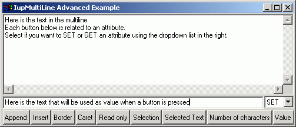

Creates an editable field with one or more lines.
Ihandle* IupMultiLine(char *action); [in C] iup.multiline{} -> (elem: ihandle) [in Lua] multiline(action) [in LED]action: name of the action generated when the user types something.
This function returns the identifier of the created multiline, or NULL if an error occurs.
APPEND: Inserts a text at the end of the multiline.
INSERT: Inserts a text in the caret's position.
BORDER: Shows a frame around the multiline. Default: "YES".
CARET: Position of the insertion point in the multiline.
READONLY: Allows the user only to read the contents, without changing it. Possible values: "YES", "NO" (default).
SELECTION: Selection interval.
SELECTEDTEXT: Selection's text.
NC: Maximum number of characters.The maximum NC value is 231.
SIZE: Multiline size. Default: room for 5 characters in 1 line.
ALIGNMENT: (Windows Only) Label's alignment. Possible values: "ALEFT", "ARIGHT", "ACENTER". Default: "ALEFT".
VALUE: Text typed by the user. The '\n' character indicates line change. Default: NULL.
TABSIZE (Windows Only)
Controls the number of characters for a tab stop.
ACTION: Action generated when a keyboard event occurs. The callback also receives the typed key.
int function(Ihandle *self, int c, char* after); [in C] elem:action(c: number, after: string) -> (ret: number) [in Lua]c: Identifier of the typed key. Please refer to the Keyboard Codes table for a list of possible values.
after: Represents the new text value if the key is validated (i.e. the callback returns IUP_DEFAULT).If the function returns IUP_IGNORE, the system will ignore the typed character. If the function returns the code of any other key, IUP will treat this new key instead of the one typed by the user.
CARET_CB: Action generated when the caret/cursor position is changed.
int function(Ihandle *self, int row, int col); [in C] elem:caret_cb(row, col: number) -> (ret: number) [in Lua]row, col: Row and collumn number.
Text is always left aligned.
Since all the keys are processed to change focus to the next element press
<Ctrl>+<Tab>. The "DEFAULTENTER" button will not be processed, but the "DEFAULTESC" will.
